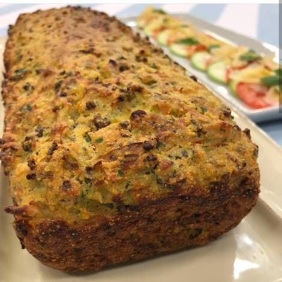
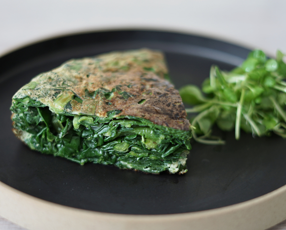

Budín de verduras light
INGREDIENTES
- Brócolis cortados: 2 tazas
- Espinaca trozada: 2 tazas (2 paquetes frescos) o 1 paquete acelga
- Zapallitos en rodajas: 2
- Zanahorias en láminas: 2
- Huevos: 3
- Claras: 3
- Queso untable descremado: 250 g.
- Sal, pimienta y nuez moscada: a gusto
PREPARACIÓN
- Lavar muy bien los vegetales.
- Blanquear la espinaca (si es congelada, descongelar). Al escurrir,cortar en tiritas.
- Cortar los brócolis, zapallitos y laminar las zanahorias (a lo largo, con pelapapas).
- Cocinar los vegetales del paso anterior, al vapor o en microondas.
- Batir los huevos y las claras, agregarle el queso descremado
- Agregarle a la mezcla la sal, la pimienta y la nuez moscada
- Mezclar esta crema con todos los vegetales.
- Aceitar una budinera o un molde alargado
- Colocar la mezcla del paso 7.
- Cocinar a horno moderado durante treinta minutos.
Tortilla verde light
INGREDIENTES
- 1 taza de acelga o espinaca cocida y picada
- 2 claras de huevo
- Sal, pimienta y nuez moscada.
PREPARACIÓN
- Hacemos tal cual se hace una tortilla así que lo que haces es hervir la acelga en agua y sal.
- Ahora calienta la sartén y mientras esta se calienta en un boul mezcla y sazona todos los ingredientes.
- Cuando esté bien mezclado, rocía la sartén con rocío vegetal e incorpora la mezcla cocinándolo de ambos lados y servir.